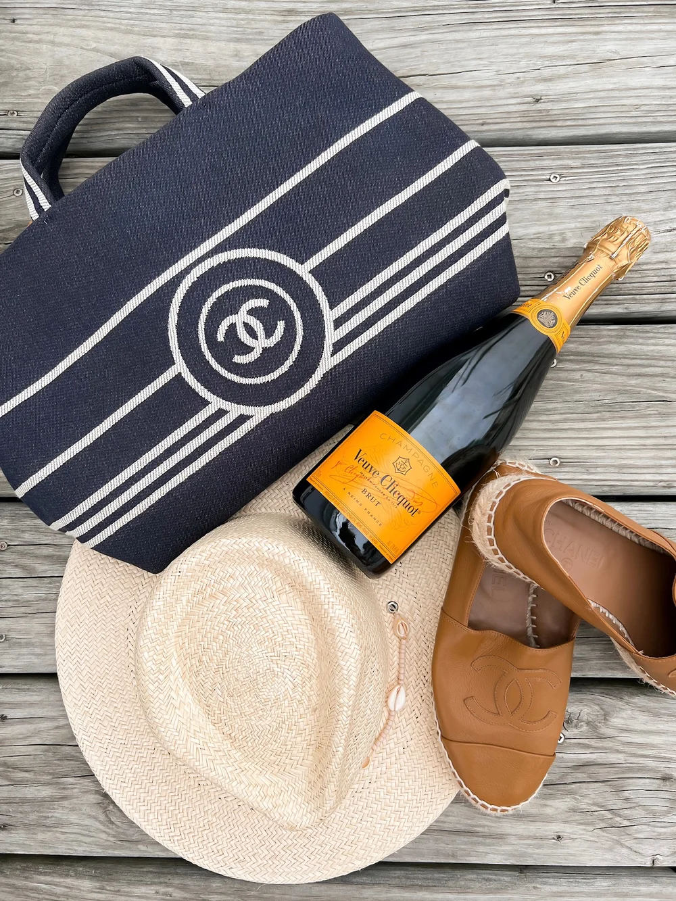
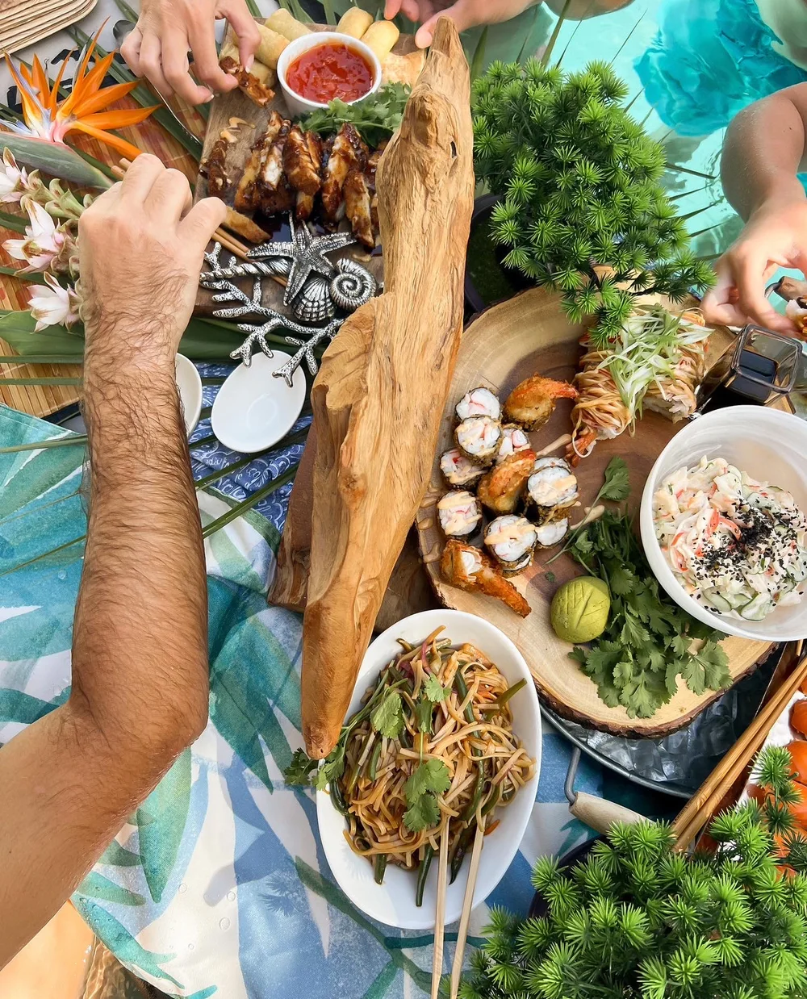
Dreamy Date Nights
Is it a vacation if you don’t find a little sparkle for the evening? My current go-to date night favorites:
- Franks Outback (equal parts cozy and chic)
- Bistro 217 (order whatever looks best on Instagram, it won’t disappoint)
- New York Prime
- Wicked Tuna
- 631 Franks on Front (technically a bit of a drive, but totally worth it if you want to feel like you’re the star in a Hallmark movie)
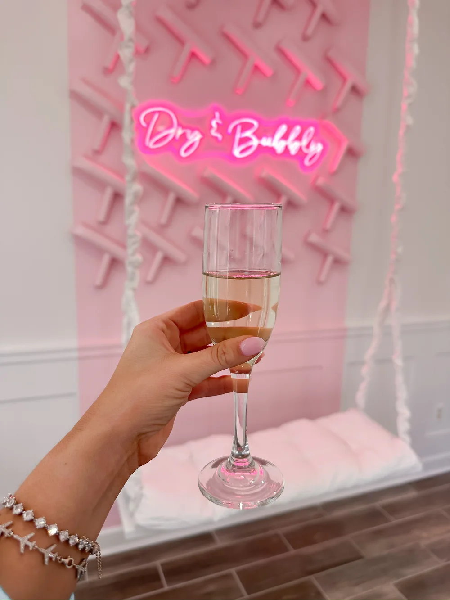
All Things Beauty
Can we talk self-care for a minute? You know those trips where your manicure chips the minute you cross county lines? Save yourself:
- Nails: Polished on Loyola Drive – next-level attention to detail
- Blowout: Dry & Bubbly (because who wants to do their own hair on vacation?)
- Spray Tan: Tantalizing in Murrells Inlet
- Spas: Cinzia Spa, or if you love a good re-centering, head over to The Awakening
- Hair: Tropez Salon in Wilmington. (It’s a drive, but you’ll thank me once you see those beachy waves.)
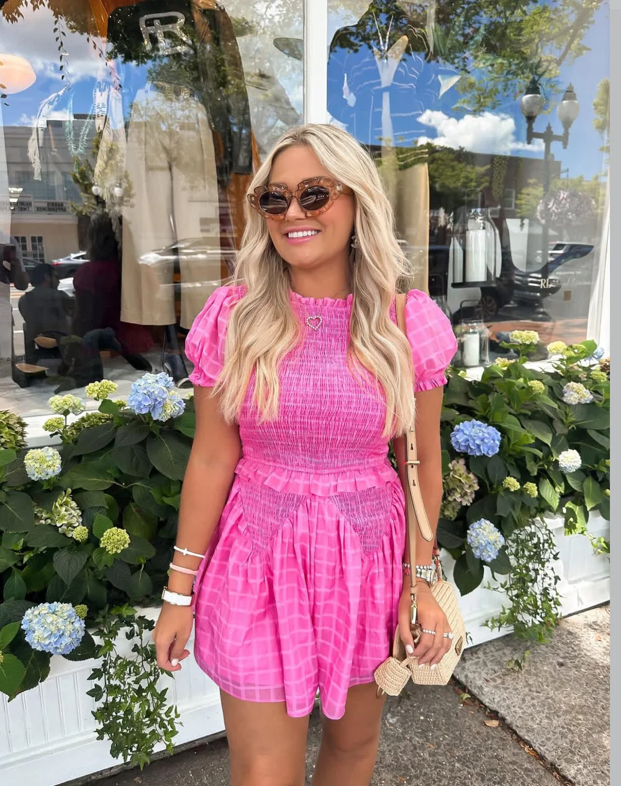
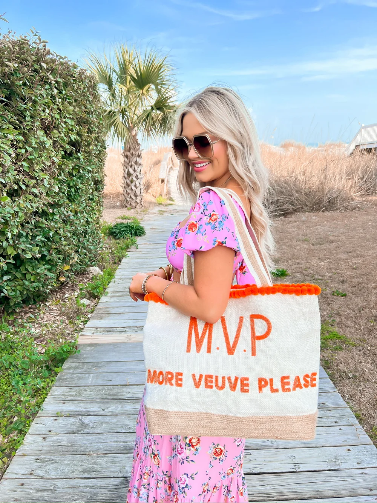
Shop Like a Local
Retail therapy hits different when you’re by the sea. My Myrtle Beach favorite shops:
- Monkees of Myrtle Beach
- The Joggling Board (the name alone gets you in the door)
- Socialite
- L.Mae
- Pure Palmetto
- Mimi Seabrook
- The Foxy Lady
- Whimsy Roost
- Doodlebugs
- Rose Arbor
- The Winyah Angler Outfitters
(If I’ve missed your favorite, send me a DM—I’m always up for a shopping trip.)
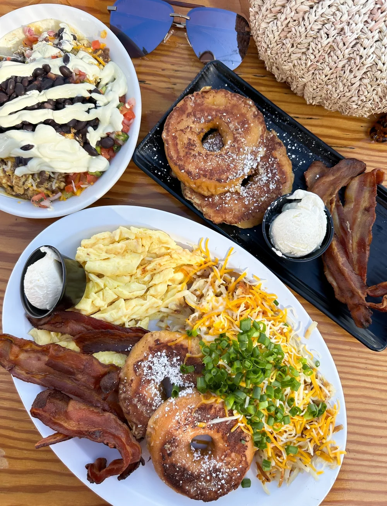
Brunch & Breakfast Cravings
Repeat after me for maximum vacation happiness: vacation calories don’t count.
- Blueberry’s Grill (just get the blueberry pancakes, trust)
- Woodhaven (the kind of place where the coffee comes hot and the staff calls you “hon”)
- Drift (avocado toast that will ruin you for all other avocado toasts)
- Kosta Bowls (for the rare moments you remember greens exist)
- Mimosas (the name alone says “commitment to the cause”)
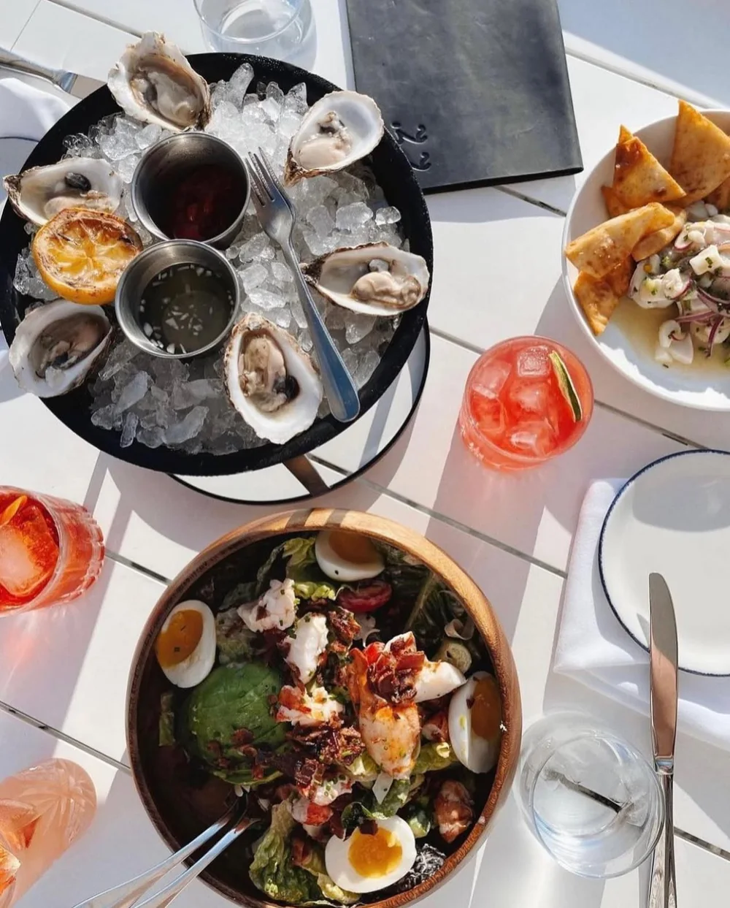
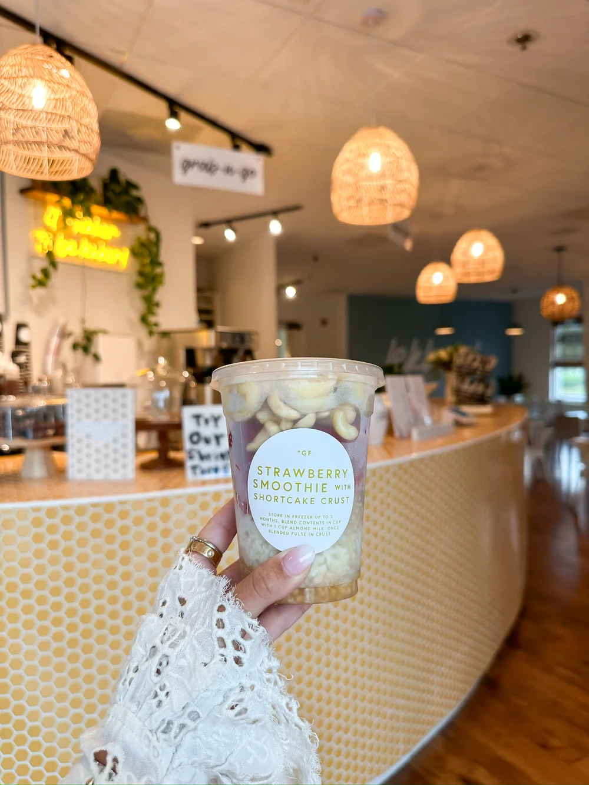
Lunch on the Go
Whether your morning was spent shopping, napping, or doing very athletic things at the pool, these lunch spots get the job done right:
- Dagwoods (the sandwich is bigger than your face)
- Beach House Bar & Grill (beachy, breezy, big portions)
- Taco Mundo (because tacos = love)
- Lulus (seafood with a side of sunshine)
- Lekker Eats (fresh, fast, and feels good)
- Croissants (for when you want your carbs fancy)
- Boardwalk Billy’s
- King’s Pizza (grab a slice, take a stroll)
- Jimmyz Hibachi (quick hibachi magic, no reservation required)
- Crab Catchers
- Burky’s
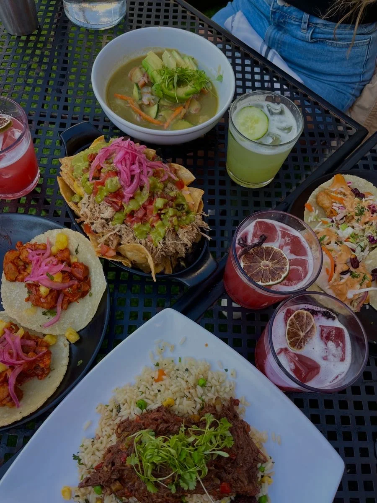
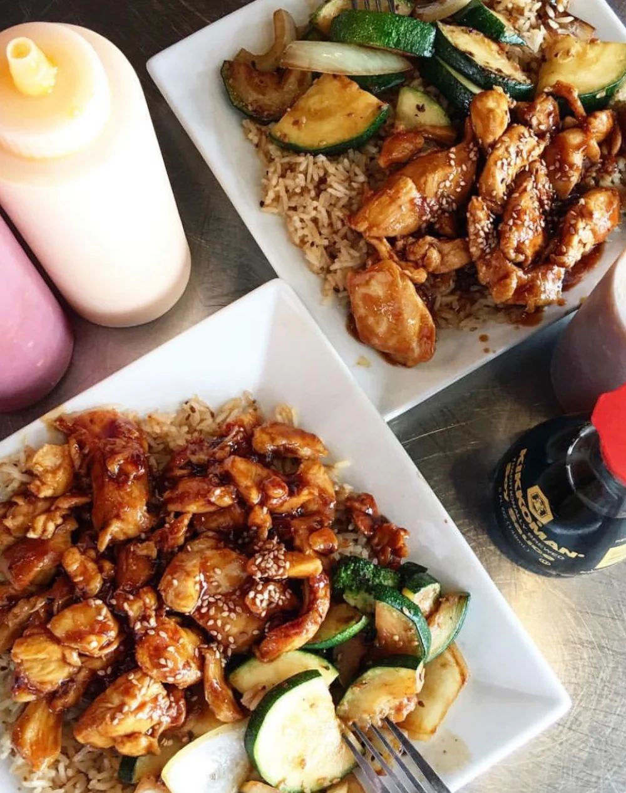
Dinners to Write Home About
Some meals are so good, you genuinely consider planning next year’s trip while you’re chewing. These are those places (favorites are starred because I have strong feelings):
- New York Prime*
- Flamingo Grill*
- Jimmyz Hibachi*
- Aspen Grill*
- Hook & Barrel
- Crave
- Clark’s
- Sea Captain’s House
- Big Chill Island House
- Joe’s Bar & Grill*
- Taco Mundo* (yes, again)
- Biminis*
- Bistro 90*
- Swig & Swine
- Black Drum
- Uptown Bistro
- King’s Pizza* (yep, pizza for every meal is valid here)
- 44 & King
- Chucks
Sweet Treats
You didn’t travel all this way for salad, right? Here are my top dessert spots:
- Krispy Kreme (specifically when the hot light is on, obviously)
- The Pineapple Hut
- The Melting Pot
- The Crazy Mason (over-the-top milkshakes live here)
- Cinnaholic (cinnamon rolls, not suitable for commitment-phobes)
- Sugar Life
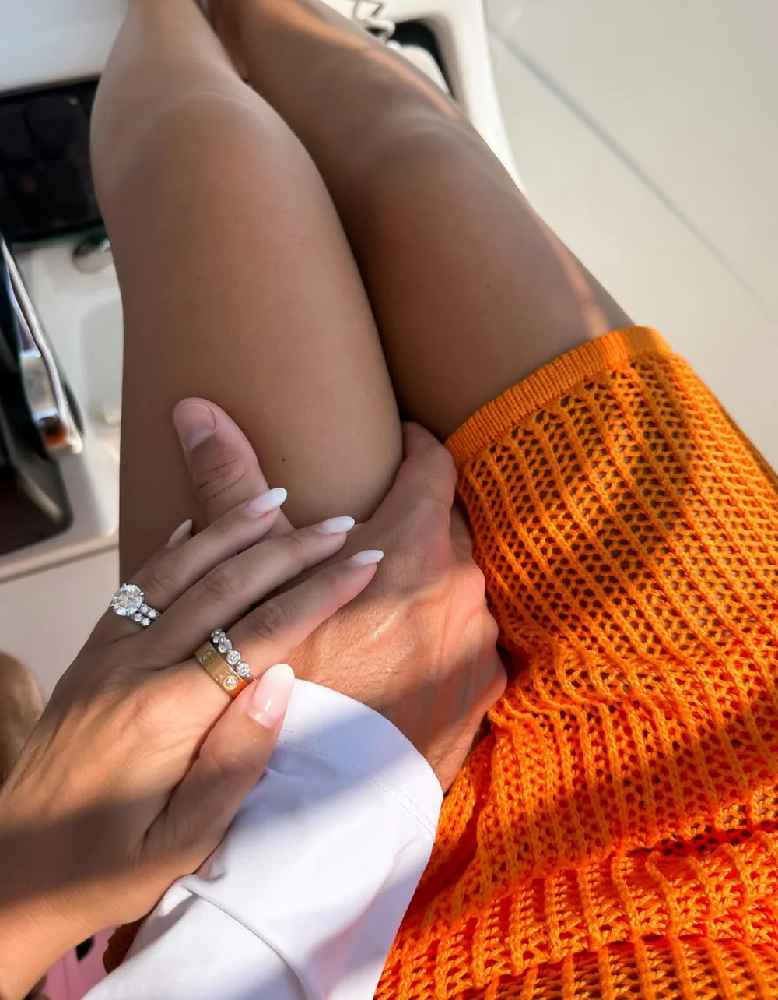
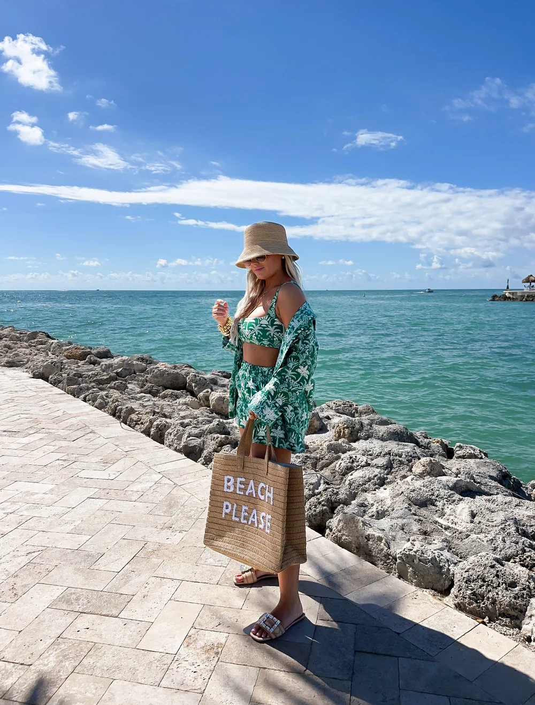
When You’re Not Eating (Yes, That Happens)
Food might be Myrtle’s major draw, but there’s more to love between meals:
- Barefoot Landing (shops, people-watching, surprisingly therapeutic duck viewing)
- Cruise the Intercoastal Waterway (pretend you’re yacht people for an afternoon)
- Broadway at the Beach (touristy, fun, perfect if you brought kids/teens/your fun-loving alter ego)
- Pop Stroke (mini golf, but fancier)
- NASCAR SpeedPark (for your inner speed demon)
- Top Golf
- Actual Beach Time (the reason you packed half your suitcase in swimsuits)
- Dave & Buster’s
- Carolina Opry or Alabama Theatre (level up your trip with a show)
- Pirates Voyage (dinner and a show, with pirates, as you do)
- Duplin Winery (wine tasting meets porch sitting)
Bars & Live Music
Some places just nail vacation vibes. Whether you want to dance, chill, or belt your favorite song with zero shame, these are my picks:
- Bourbon Street (lively crowd, leave your quiet voice at home)
- The Bowery (country music for days)
- The Hangout
- Ocean Annies (where your toes are in the sand and your drink comes with a view)
- Duplin Winery
- Tin Roof
- RipTydz
- Crocodile Rocks
- Wicked Tuna
- 3001 Nightlife
Packing your beach bag yet? Myrtle Beach is a series of delicious decisions just waiting to be made. If you find something you love that’s not on this list, tell me everything—I’ll add it to my rotation. Happy travels…and don’t forget to order dessert.